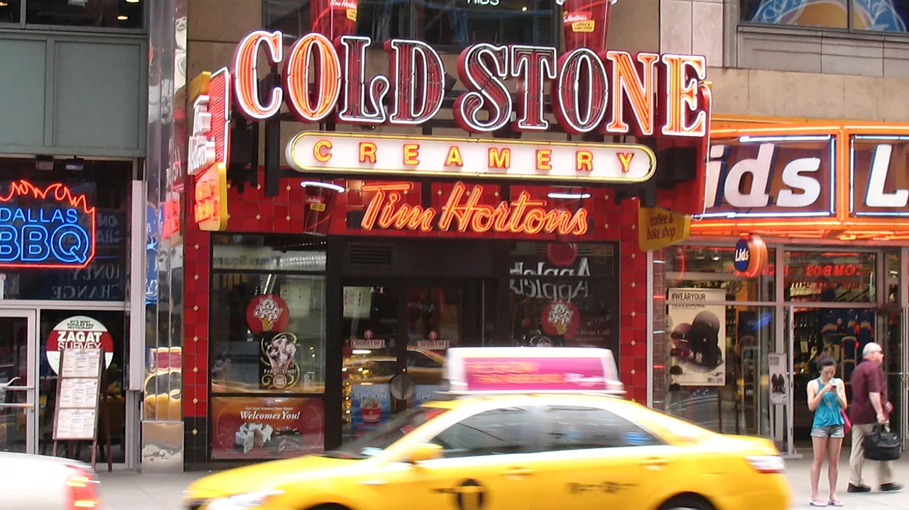

Unofficial fan guide - not affiliated with Tim Hortons
About 700 American Tim Hortons, most of them within a few hours of the Canadian border. The state-by-state count, where the chain is expanding in 2026, and what is different on the U.S. menu.
Full Menu / Blog / Tim Hortons in the U.S.

Tim Hortons has about 700 restaurants in the United States. Most are in New York (276), Michigan (202) and Ohio (131), which together hold 87% of U.S. locations, according to an August 2026 ScrapeHero count. Smaller clusters are in Pennsylvania, New Jersey and Texas, and Maryland got its first Tim Hortons in 2026.
New York has the most Tim Hortons in the U.S., with 276 of the 697 locations ScrapeHero counted on August 26, 2026. That is about 40% of the U.S. total. Michigan and Ohio come next. After those three, no state has more than about 20.
| State | Tim Hortons (Aug 2026) | Share of U.S. |
|---|---|---|
| New York | 276 | 40% |
| Michigan | 202 | 29% |
| Ohio | 131 | 19% |
| Pennsylvania | 19 | 3% |
| New Jersey | 15 | 2% |
| Texas | 15 | 2% |
| West Virginia | 10 | 1% |
| Georgia | 8 | 1% |
| Tennessee | 7 | 1% |
| Maine | 7 | 1% |
Location trackers disagree by a few dozen stores. Brilliant Maps once mapped 640 U.S. locations, and Tasting Table counted 659 in March 2025. But every source has the same three states at the top.
Tim Hortons grew out from Canada, so it expanded first into states that border Ontario and already knew the brand. Western New York, the Detroit area and Ohio sit a short drive from Canadian cities. Buffalo and Columbus each have 32 locations, more than most whole states.
The first successful U.S. store opened in Tonawanda, New York, just outside Buffalo, in 1984. Two earlier Florida outlets, opened in 1981, did not last.
Beyond the top ten, Tim Hortons has a small number of restaurants in several more states. Chowhound's 2024 list also named Delaware, Indiana, Kentucky, Minnesota, Missouri and North Dakota, each with only a handful of stores.
Store counts in these states change quickly as single restaurants open or close. For the nearest location, the store finder in the Tim Hortons app is more reliable than any list.
Most of the country still has no Tim Hortons. None of the 2024 to 2026 counts list a Tim Hortons on the West Coast, and most of the South and Mountain West is empty too. ScrapeHero's August 2026 count found 40 states and territories with none.
Tim Hortons is adding new states in 2026 through franchise deals. It moved into Maryland and deeper into Texas this year. U.S. president Katerina Glyptis has said the company is signing franchise deals across the country.
Maryland's first Tim Hortons opened in 2026 at 6400 Ridge Road in Eldersburg, Carroll County, in a former Roy Rogers restaurant. Local news reported it open by July 30, 2026. Ten Maryland locations are planned across Howard and Carroll counties.
San Antonio got its first Tim Hortons in 2026 at 2919 North Loop 1604 East, in the Redland Plaza development. Two more San Antonio stores are planned, on Nacogdoches Road and near Blanco Road and Loop 1604. Texas is already one of the ten biggest Tim Hortons states, with 15 locations in August 2026.
Yes. The core coffee, donuts and Timbits are shared, but U.S. seasonal menus launch on different dates and often have different items. If you cross the border, the limited-time lineup will not match. The U.S. even has its own Halloween menu, which starts September 30, 2026 with Frankenstein and Mummy donuts and TWIX drinks. In border states, Tims competes head to head with Dunkin'; see our Tim Hortons vs Dunkin' comparison.
| Campaign | U.S. | Canada |
|---|---|---|
| Fall / Pumpkin Spice 2026 | From August 12, 2026, with a Pumpkin Spice Donut | September 1 to November 1, 2026, with a Pumpkin Spice Muffin |
| Holiday menu 2025 | November 5, 2025 (OREO Peppermint drinks, Snowman Donut) | November 12, 2025 (Biscoff lineup) |
| Holiday Smile Cookie 2025 | November 17 to 23, 2025 | November 17 to 23, 2025 |
For the Canadian side, see the Pumpkin Spice lineup and the Tim Hortons holiday menu. Prices on this site are Canadian and in Canadian dollars, so U.S. prices will differ.
Restaurant Brands International owns Tim Hortons in both countries and reports Canada and the U.S. as one segment, with 4,570 restaurants on June 30, 2026. U.S. stores are almost all franchised, like the rest of the system, and Katerina Glyptis leads the U.S. business as its president. See who owns Tim Hortons for the full ownership chain, or how many Tim Hortons there are in Canada for comparison.
About 700. Location tracker ScrapeHero counted 697 U.S. Tim Hortons on August 26, 2026. Older counts range from 640 to 659.
New York, with 276 locations in August 2026, about 40% of all U.S. Tim Hortons. Michigan (202) and Ohio (131) come second and third.
Tim Hortons first tried Florida in 1981 with two outlets that closed. Florida does not appear in the August 2026 top-ten state list, so check the Tim Hortons app for any current location.
Not as of 2026. None of the 2024 to 2026 location counts list a Tim Hortons in California or anywhere else on the U.S. West Coast. The chain's U.S. stores are concentrated near the Canadian border.
Yes. Texas had 15 Tim Hortons in August 2026, and San Antonio got its first location in 2026 at 2919 North Loop 1604 East, with two more planned.
Maryland's first Tim Hortons opened in Eldersburg, at 6400 Ridge Road, and was reported open by July 30, 2026. Ten Maryland locations are planned in Howard and Carroll counties.
Buffalo and Columbus tie for the most, with 32 locations each, according to ScrapeHero's 2026 data. Rochester, Tonawanda and Cheektowaga, all in New York, follow.
Tim Hortons first opened two Florida outlets in 1981, which did not last. Its lasting U.S. debut was in Tonawanda, New York, in 1984.
It is the same brand and owner, but seasonal menus differ. In 2026 the U.S. fall menu started August 12, three weeks before Canada's, and included a Pumpkin Spice Donut that Canada did not get.
Roughly 15 to 17 states, depending on the source and date. ScrapeHero's August 2026 count found 40 U.S. states and territories with no Tim Hortons at all.
Katerina Glyptis is the president of Tim Hortons U.S. The brand is owned by Restaurant Brands International, which also owns Burger King, Popeyes and Firehouse Subs.
This is an independent, unofficial guide focused on the Canadian menu. It is not affiliated with, endorsed by, or sponsored by Tim Hortons or Restaurant Brands International. State and city counts come from ScrapeHero (August 26, 2026), a third-party tracker, and older counts from Brilliant Maps, Tasting Table (March 2025) and Chowhound (November 2024). New-market details come from The MoCo Show (July 30, 2026) and CultureMap San Antonio (February 2026). U.S. menu dates come from Tim Hortons U.S. announcements and Sporked (September 2026). See Sources.